Префектура Симанэ · Идзумо · святилища
Идзумо-тайся: святилище, которое было выше храмов, и месяц, когда сюда съезжаются все боги Японии
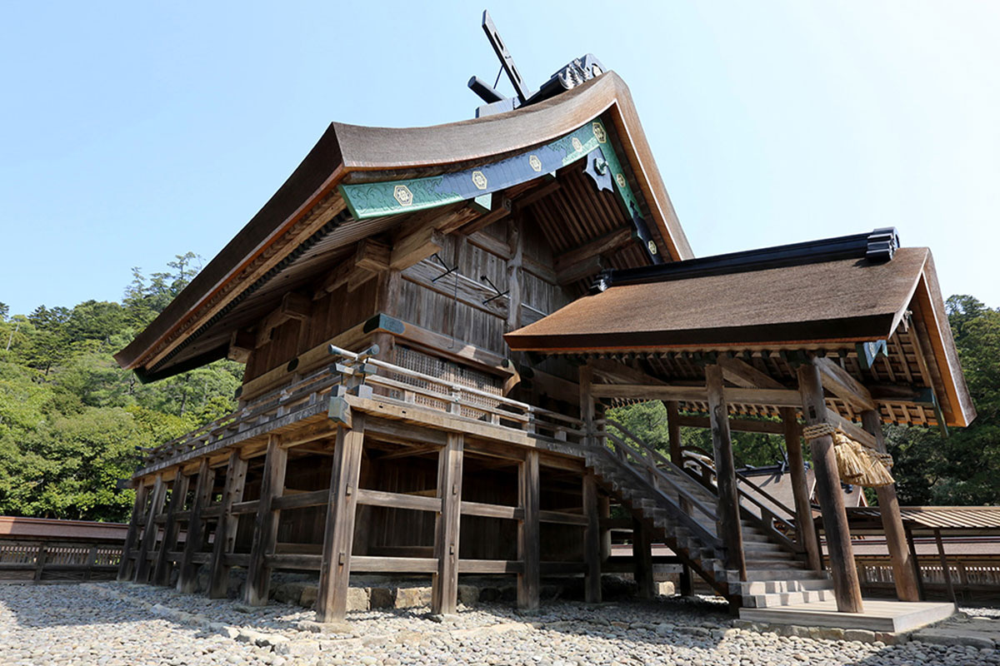
В древности главное здание святилища Идзумо-тайся поднималось, по преданию, на 48 метров. Каждую осень по старому календарю сюда собираются боги со всей Японии, и у них в Идзумо есть свой маршрут: совет, пир и проводы.
Легенда
Святилище высотой 48 метров
Идзумо-тайся стоит в городе Идзумо на западе префектуры Симанэ и считается одним из старейших святилищ Японии. Здесь почитают Оокунинуси, бога, который, по мифам, обустроил японскую землю, а потом уступил её потомкам богини солнца Аматэрасу.
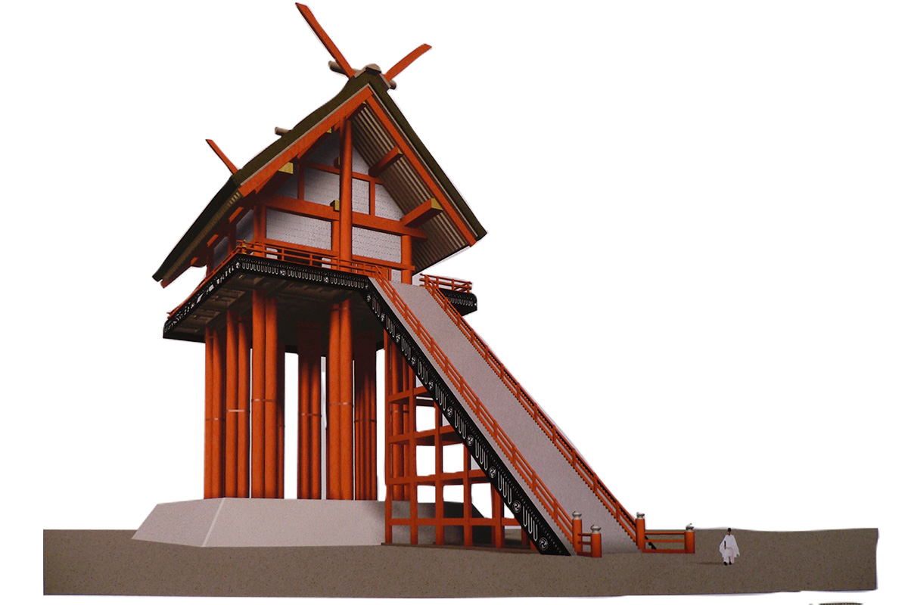
Предание гласит, что в древности главное здание было высотным: около 48 метров. Долго это считали красивой легендой, пока в 2000 году при строительстве подземного помещения на территории святилища не нашли остатки необычайно толстых столбов. Каждый из них был собран из трёх огромных стволов, связанных вместе. Эти находки хранятся как важное культурное достояние и служат главным доказательством того, что высотное святилище действительно существовало. Зачем святилищу понадобилась такая высота, до сих пор неясно.
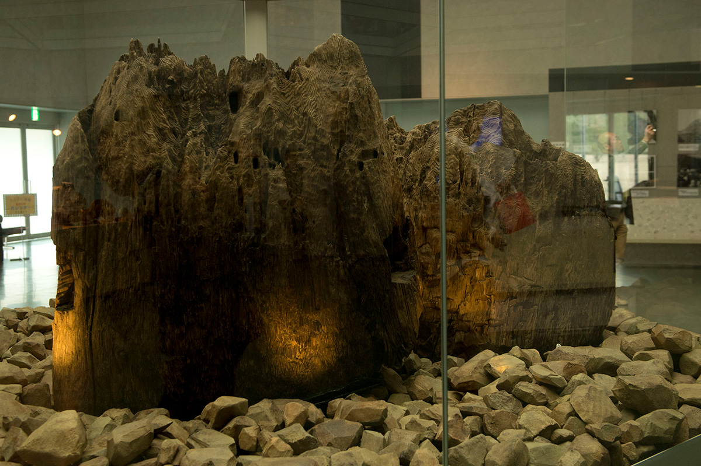
Анализ керамики, радиоуглеродный и дендрохронологический методы и старые записи сходятся: столбы относятся к эпохе Камакура (1185–1333). Значит, по крайней мере тогда здание действительно было очень высоким. Архитектурный историк из Университета Кобэ, который проектировал реконструкцию высотного святилища, при этом считает, что сначала оно могло быть ниже. Лестница с уклоном 45 градусов на высоту почти 50 метров делала каждый обряд опасным: подниматься и спускаться по ней было трудно.
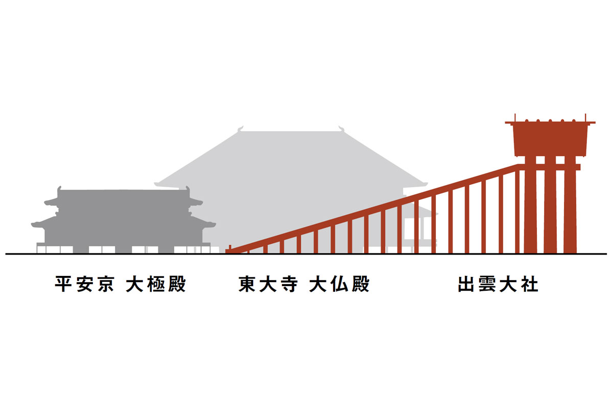
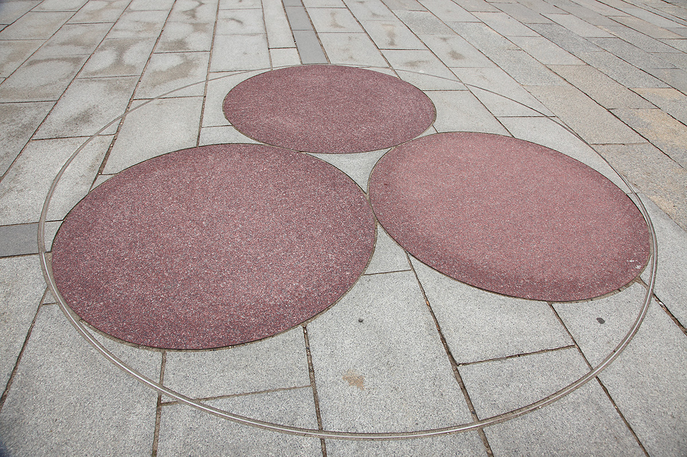
По этому списку святилище Идзумо было выше даже Зала Великого Будды храма Тодайдзи в Нара. Глядя на сегодняшнее здание и представляя себе его высотного предка, понимаешь, почему Идзумо так волнует воображение.
Архитектура
Главное здание: самое большое в стране
Нынешнее главное здание, где пребывает Оокунинуси, построено в 1744 году. Его высота около 24 метров, в плане это квадрат со стороной 10,9 метра по осям столбов. Это самое большое деревянное здание святилища в Японии. Здание внесено в список национальных сокровищ. Художник Таро Окамото (1911–1996), один из самых известных японских авангардистов XX века, называл его вершиной японской архитектуры, и вблизи эти слова понятны любому гостю.
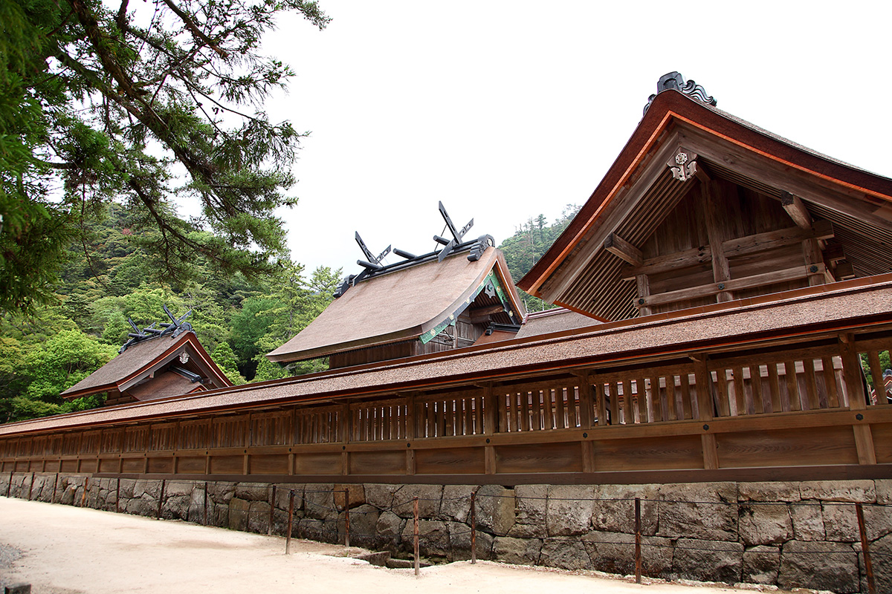
Строят его в стиле тайся-дзукури, самом древнем стиле японских святилищ вместе со стилем симмэй-дзукури. Симмэй-дзукури встречается по всей стране, а тайся-дзукури характерен прежде всего для области Идзумо. Крыша двускатная, раскрытая, как перевёрнутая книга, а вход устроен с торца, со стороны фронтона. Пол поднят высоко над землёй: похоже, что к высоте это здание стремилось с самого начала.
В плане здание квадратное, его держат девять столбов, расставленных так, что сверху они образуют решётку из четырёх клеток. Самый толстый столб стоит в центре, но на деле он поддерживает балки, а главную нагрузку от конька несут два других столба. Девять столбов держат тяжёлую крышу, покрытую многими слоями кипарисовой коры. Сегодня столбы стоят на каменных основаниях, а до XVII века их основания уходили прямо в землю.
Для японского святилища такой план необычен. Обычно хочется, чтобы бог находился в самой середине здания, а здесь в центре стоит столб. Ещё один столб стоит посреди фасада, прямо на оси входа: и спереди, и сбоку здание разделено на два пролёта.
Бог смотрит на запад
Само здание обращено на юг, а место бога внутри повёрнуто на запад. Объяснений несколько. Одно связано с мифом: на западе лежит пляж Инаса, где, по преданию, Оокунинуси уступил землю небесным богам, и он всегда смотрит в ту сторону. Говорят и о том, что так бог охраняет западные рубежи.
Другое объяснение исходит из того, как здание использовалось. В старину внутри просторного зала обряды проводил глава рода Идзумо-кокусо, из которого поколениями выходят верховные жрецы святилища, вместе с множеством священников. Верховный жрец садился лицом к священникам, то есть на место бога, а сам бог Идзумо находился за его спиной. Паломников, которые молятся снаружи, тогда просто не было: здание задумывали для обрядов внутри, и с этой точки зрения его странный план становится логичным.
Главное святилище Исэ, где почитают Аматэрасу, устроено иначе. Но когда-то Аматэрасу почитал сам император в своём дворце, и те дворцовые здания, по мнению исследователей, были похожи на святилище в Идзумо.
На потолке внутри главного здания написана роспись «Восемь облаков». Облаков на ней только семь: число восемь означает вечность, а семь, стоящее перед ним, символизирует возрождение.
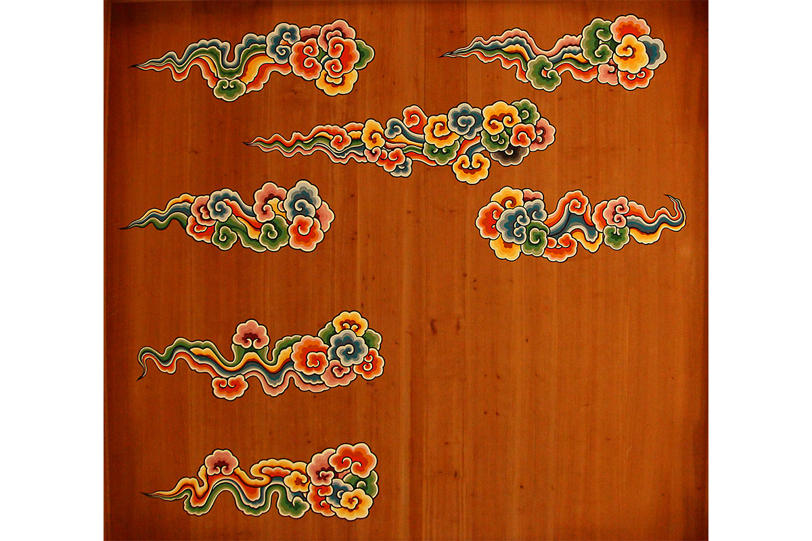
Как читать фасад
У тайся-дзукури много деталей, и почти у каждой есть своя история. На самом верху крыши скрещиваются два бруса «тиги», их концы срезаны вертикально, как во внешнем святилище Исэ. Поперёк конька лежат короткие брёвна «кацуоги», похожие, говорят, на брусок сушёного тунца. Их число у разных святилищ разное, а здесь их три: нечётное число положено святилищу мужского бога.
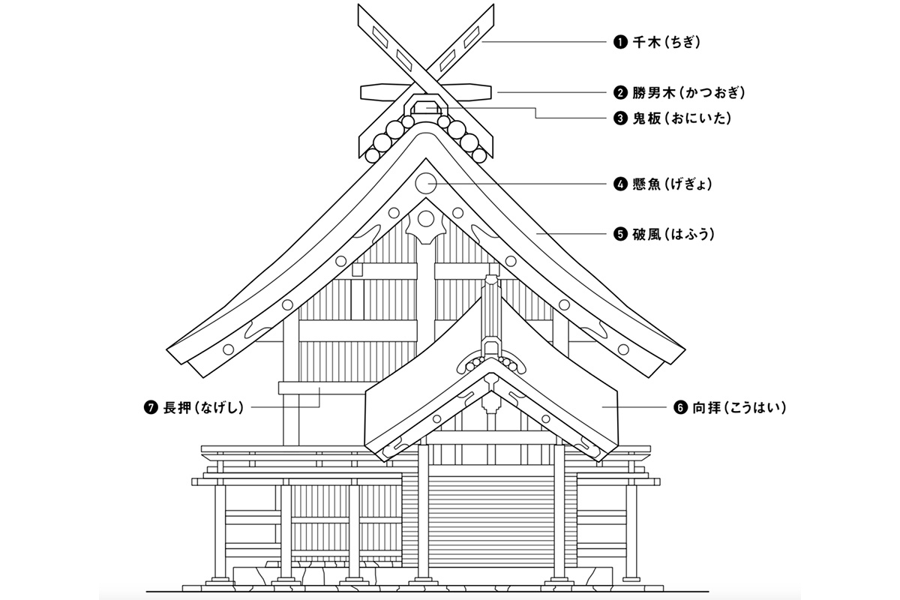
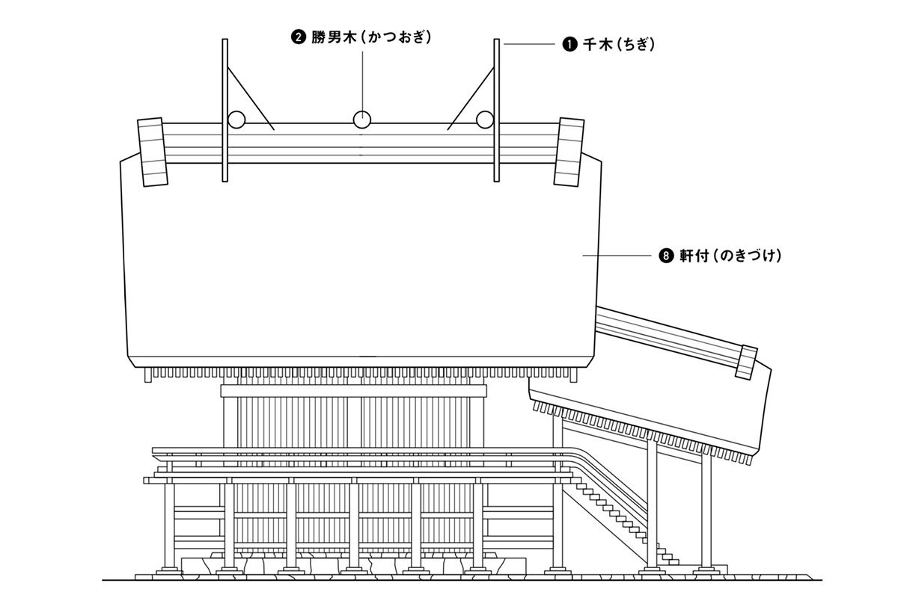
Медные пластины «онита» прикрывают концы конька. Во время большой реставрации 2008–2016 годов кацуоги, тиги и онита сделали заново. Под крышей висят резные украшения «гэгё» в форме воды и рыб: это оберег от пожара. Треугольник крыши на фронтоне называется «хафу». Над лестницей выступает навес «кохай», который укрывает молящихся от дождя. Горизонтальные брусья «нагэси» прибиты к столбам гвоздями и связывают их между собой. Край крыши «нокидзукэ» выкладывают особенно толсто, чтобы его не разрушали ветер и дождь, и от качества этой работы во многом зависит, как выглядит всё здание.
Святилище Идзумо-тайся
- Адрес
- префектура Симанэ, Идзумо, Тайся-тё, Кидзуки-Хигаси, 195
- Телефон
- +81 853-53-3100 (контора святилища)
- Часы работы
- 6:00–20:00
- Как добраться
- 5 минут пешком от станции Идзумо-тайся-маэ линии Итибата, 20 минут на автобусе от станции Идзумо-си линии JR, на машине 35 минут от съезда Синдзи скоростной дороги Сан-ин, есть парковка
Камиари
Куда ездят боги в Идзумо
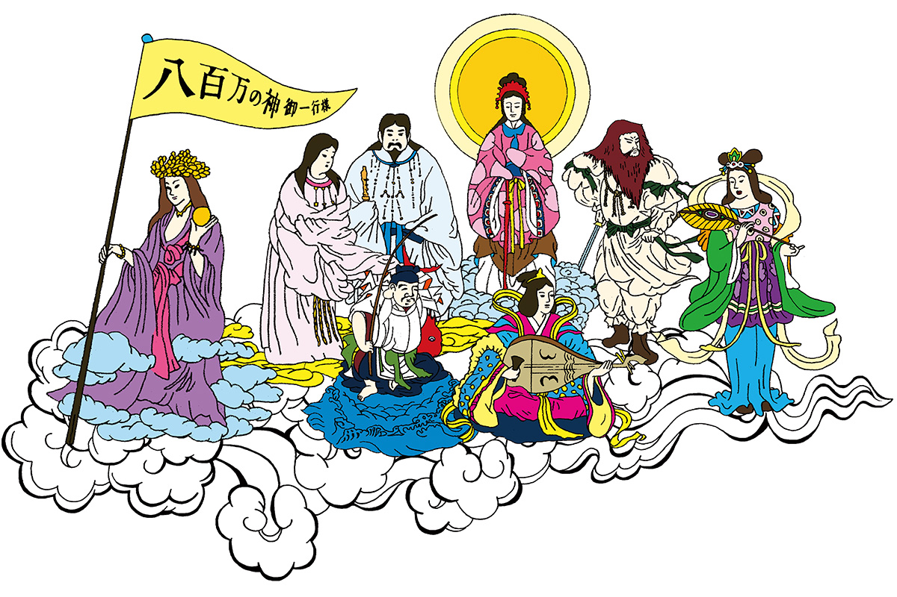
Десятый месяц по старому календарю во всей Японии называют «месяцем без богов», а в Идзумо «месяцем Камиари», месяцем присутствия богов: в это время сюда собираются боги со всей страны. По преданию, они высаживаются на пляже Инаса вечером 10-го числа 10-го месяца по старому календарю. Но все дни Камиари они проводят не только в Идзумо-тайся: боги объезжают и другие святилища области. Какие именно, толкуют по-разному. О трёх из них рассказал настоятель святилищ Манкусэн и Татимуси, до этого работавший хранителем в музее древней истории Идзумо.
Каминомия: зал заседаний
В Идзумо боги проводят совет, «камихакари»: обсуждают процветание страны и то, кто с кем свяжет судьбу. Место этого совета называют святилище Каминомия, оно же Кария, «временный дворец». Каминомия входит в число святилищ, подчинённых Идзумо-тайся, но стоит за его пределами, в двух шагах от пляжа Инаса. Во время совета здесь проходит обряд Каминомия-сай. От Идзумо-тайся и от пляжа сюда легко дойти, поэтому стоит заглянуть и поблагодарить богов.
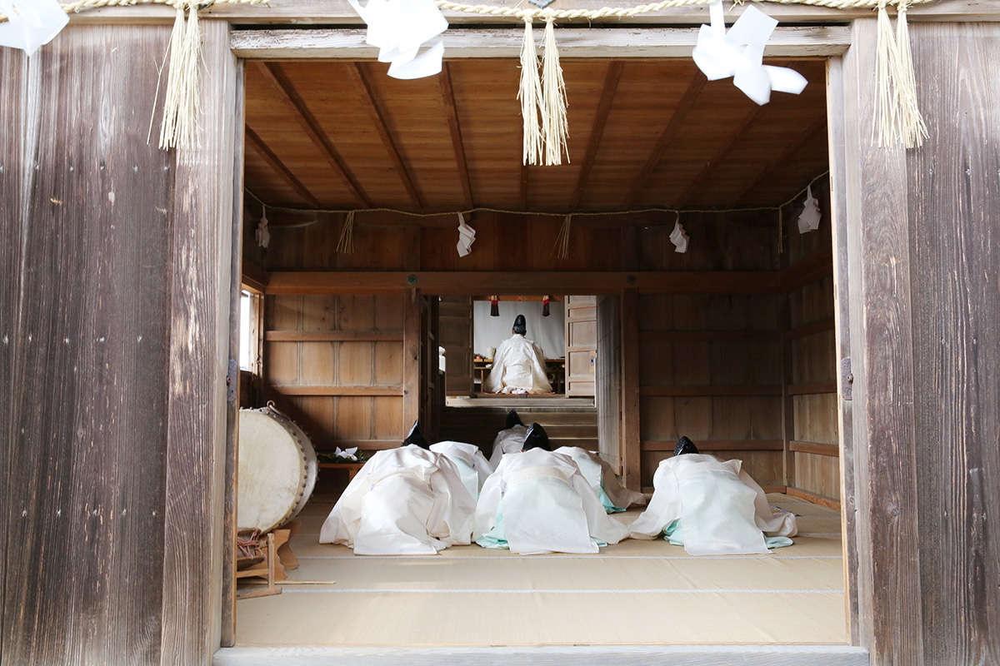
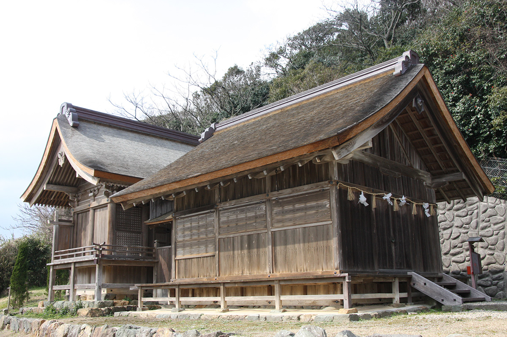
Святилище Каминомия
- Адрес
- префектура Симанэ, Идзумо, Тайся-тё, Кидзуки-Кита
Сада: проводы в темноте
Святилище Сада в городе Мацуэ, столице префектуры, имеет высокий ранг и известно как одно из святилищ, где пребывают боги в месяц Камиари. Его три главных здания построены в мощном стиле тайся-дзукури, а в центральном почитают Сада-но оками, одного из четырёх великих богов Идзумо.
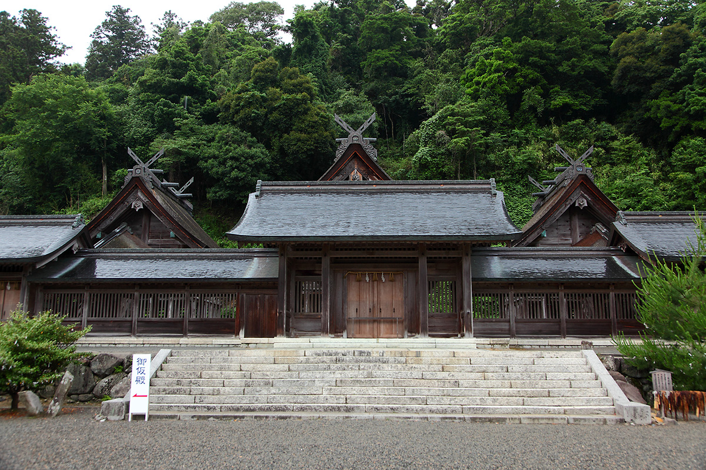
Здесь богов провожают каждый год вечером 25 ноября на обряде Карасадэ-сай. Священники поднимаются в темноте по горной тропе на гору Канномэ примерно в двух километрах от святилища. Там, у места со священным деревом и впадиной, которую называют прудом, ставят лодочку с «химороги», временным пристанищем богов, и отправляют их в путь. В Идзумо обряды встречи и проводов богов живы до сих пор.
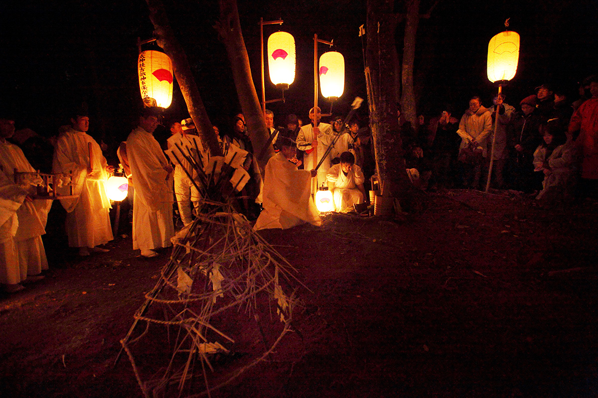
Святилище Сада
- Адрес
- префектура Симанэ, Мацуэ, Касима-тё, Сада-Миянаути
- Телефон
- +81 852-82-0668
- Даты
- Карасадэ-сай ежегодно 25 ноября, вечером
Манкусэн: прощальный пир
В поездке хочется попробовать местную еду и выпить местного. Боги, как выясняется, не исключение. Святилище Манкусэн стоит на территории святилища Татимуси, и по преданию после совета боги заезжают сюда на «наораи», праздничную трапезу.
Камиари-сай в Манкусэн длится с 17-го по 26-е число 10-го месяца по старому календарю. Ранним утром 17-го настоятель в одиночку проводит тайный обряд Рюдзин-сай и принимает богов. В последний день, 26-го, идёт обряд Карасадэ, который здесь ласково называют «Карасадэ-сан». Настоятель трижды стучит веткой сливы в дверь зала подношений и произносит «отати», «в путь», напоминая богам, что пора собираться домой. После этого у богов начинается пир, а люди тихо уходят, чтобы им не мешать.
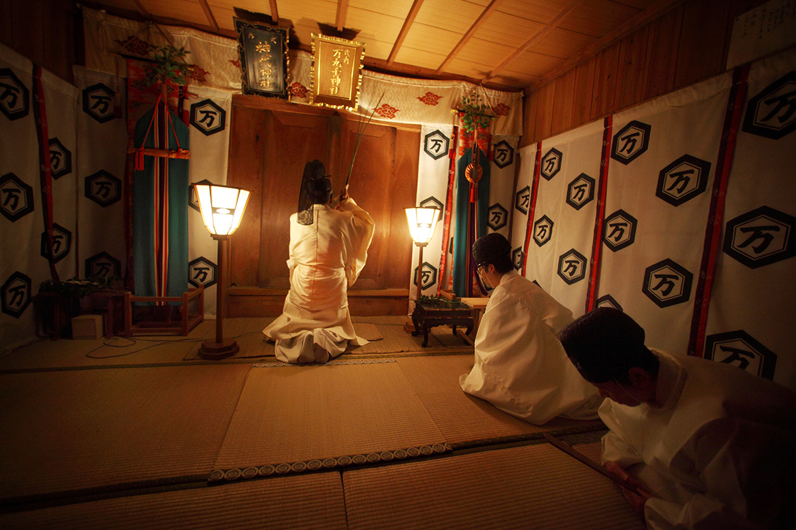
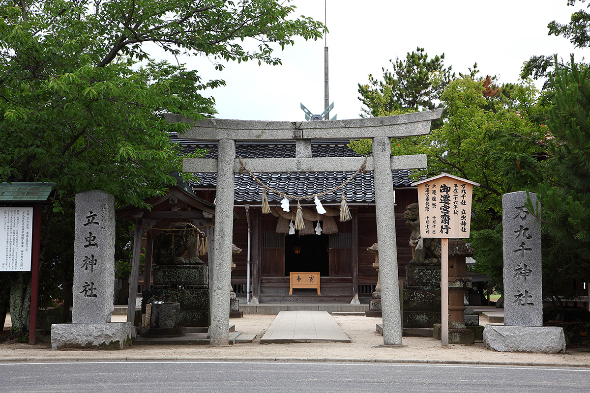
Богам явно не хочется уезжать из Идзумо. На машине от святилища недалеко до аэропорта Идзумо, так что сюда удобно заехать перед вылетом и проститься с Идзумо так же, как прощаются боги.
Святилище Манкусэн
- Адрес
- префектура Симанэ, Идзумо, Хикава-тё, Намикава, 258
- Телефон
- +81 853-72-2032
- Даты
- Камиари-сай с 17-го по 26-е число 10-го месяца по старому календарю
Фото: Харуо Накано, Таканори Судзуки.